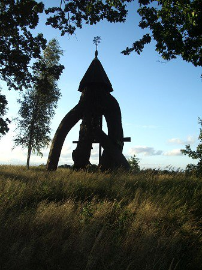

Pradžia
Apie Mus
Galerija
Kontaktai
Vilkų Kampo muziejus

Vilkų Kampo muziejus - tai virš 30 metų renkama įvairiausių senovinių muzikos instrumentų, Mažosios Lietuvos krašto relikvijų bei daugybės įvairių XVIII - XXa. eksponatų kolekcija.
Susisiekite su mumis:
Dainos
M. Nogaitis: "Parneš namo"
Filmavo: J. Girskis, T. Žemgulis.
2013 06 20
M. Nogaitis: "Pamary"
Filmavo: A. Bružas, V. Marcinkevičius.
2017 05 20